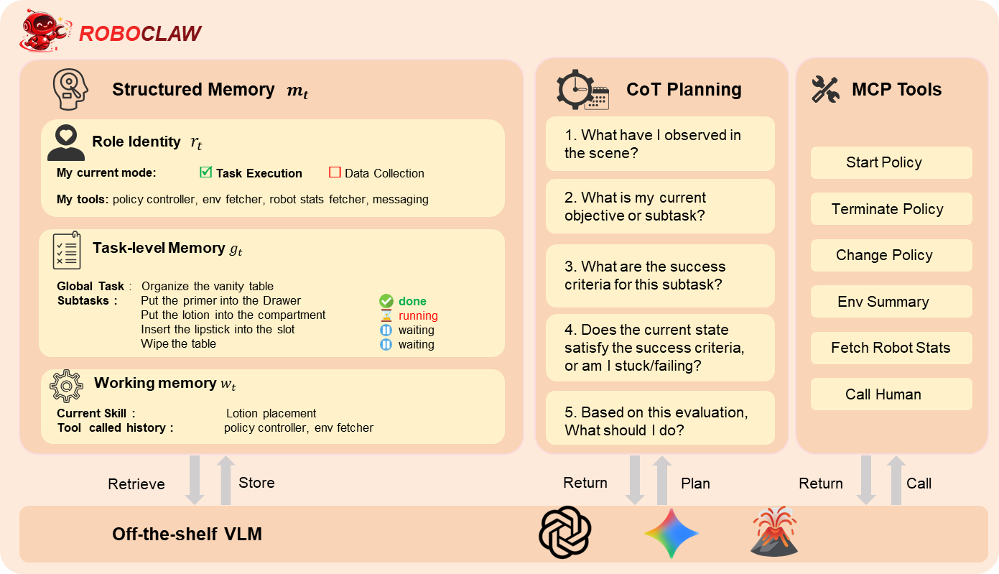

RoboClaw
一次正向操作配一个逆向复位，机器人才能更连续地为自己采集训练数据。
RoboClaw: An Agentic Framework for Scalable Long-Horizon Robotic Tasks
图 4 的第 5 轮长程整理任务：RoboClaw 约 30%，直接 VLA 基线约 5%；人工采集耗时约为它的 2.16 倍。
01这篇要解决什么？
实体机器人学习的瓶颈常常不是缺少下一步计划，而是每做一次实验就要人来复位。RoboClaw 用同一 VLM Agent 连起采集、训练和部署，引入 Entangled Action Pairs（EAP）：正向任务改变场景，逆向策略把场景带回可再次练习的状态。
02方法怎样运转？

- 01
准备正反两种行为
由初始示范训练正向任务与逆向恢复策略。逆向任务刻意设计得更简单，提供可持续采集的复位能力。
- 02
运行自复位采集循环
Agent 检查环境、调用正向策略、验证结果，再调用逆向策略复位；失败需要恢复或人工介入，新增轨迹用于后续微调。
- 03
部署时监督技能串联
用同一上下文体系编排多个已学策略。区分可直接重试的失败与已经破坏前置条件、必须先恢复的失败。
repeat within collection_budget:
forward_policy()
verify_and_log()
inverse_reset_policy()
if reset_failed: recover_or_request_intervention()
update_policy(collected_trajectories)方法与结果的原文定位见本页引用。
03跟着一个例子想一遍
教学推演：把乳液瓶放进收纳区，再把瓶子拿回起始区域，形成练习循环。一次抓空但瓶子仍直立，可以再抓；如果瓶子倒了，再调用原抓取策略未必有用，需要扶正或换恢复行为。这是“失败后重试”和“失败后恢复”的关键区别。
04实验到底表现怎样？
在 Agibot G01 双臂移动平台上做真实操作。表 3 比较 1–5 轮采集，每轮增加 50 条数据；各单技能用 50 次试验评估。人工示范预算固定，但自主采集数据随轮数增加。
作者报告的实验结果 · v3
| 表 3 · 单技能 | 第 1 轮后 | 第 5 轮后 |
|---|---|---|
| 乳液摆放 | 21/50（42%） | 43/50（86%） |
| 妆前乳摆放 | 23/50（46%） | 40/50（80%） |
| 口红插入 | 2/50（4%） | 23/50（46%） |
| 纸巾擦拭 | 11/50（22%） | 26/50（52%） |
原始证据：EAP 与部署监督：§3 ↗ · 人工成本与轮次实验：§4.1–4.2 ↗ · 正向 / 逆向成功率：表 2–3 ↗ · 长程成功与人工成本：图 4 ↗
图 4(c) 的长程梳妆台整理，在第 5 轮时 RoboClaw 约 30%，直接 π₀.₅ 基线约 5%（图读数，20 次试验），差距约 25 个百分点；最终成功率仍不高。§4.1 的人工耗时比约 2.16×，对应约 53.7% 的节省；这些收益伴随更多自主交互和数据。表 2 的逆向复位为 36/50–43/50，也意味着采集环路仍会中断。
05收益来自哪里，又停在哪里？
消融与机制证据
迭代轮数对照说明新增轨迹有助于单技能学习。长程实验还比较直接 π₀.₅ 和各子技能成功率的乘积估计；乘积是理论参考，不能当成实际跑过的闭环控制器。
结论的适用边界
复位策略、初始示范、人工纠错和训练算力都在系统成本里。难任务如口红插入经多轮后仍只有 46%，因此自采集闭环并不保证很快学会所有技能。
06放回二十篇的脉络
与 Playful 的差别是研究重心：RoboClaw 让采集—训练—部署闭环可持续，Playful 关注主动提出什么任务、积累什么代码技能。
07把阅读变成一个小研究
在仿真中设计正向和逆向任务，分别记录正向成功、复位成功、单位人工分钟有效轨迹数，再测试复位误差的累积。
先自己回答：这项实验怎样才有解释力？
如果只计采集总条数，会把无效或高度重复轨迹也算作成果。更合适的是同时检查独立测试性能和总采集成本。
- 用自己的话说出这篇改变了哪个模块。
- 画出它的输入、输出和一次失败如何被处理。
- 复述一个结果，同时说清基线、指标与实验条件。
一次正向操作配一个逆向复位，机器人才能更连续地为自己采集训练数据。
↗带着位置回到原文
首发日期用于时间排序；以下方法与结果对应 v3。数据为论文作者报告，本讲义没有独立复现实验。
QA就这一页提问或讨论
对某个数字、某条边界或某个推演有疑问，欢迎直接留言：讨论按页面分开，回复会保留在 XinrunXu/agentic-robotics-20-papers 的 Discussions 里，需要一个 GitHub 账号。